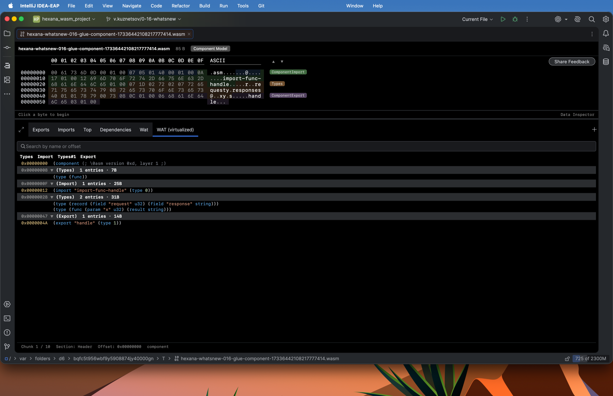
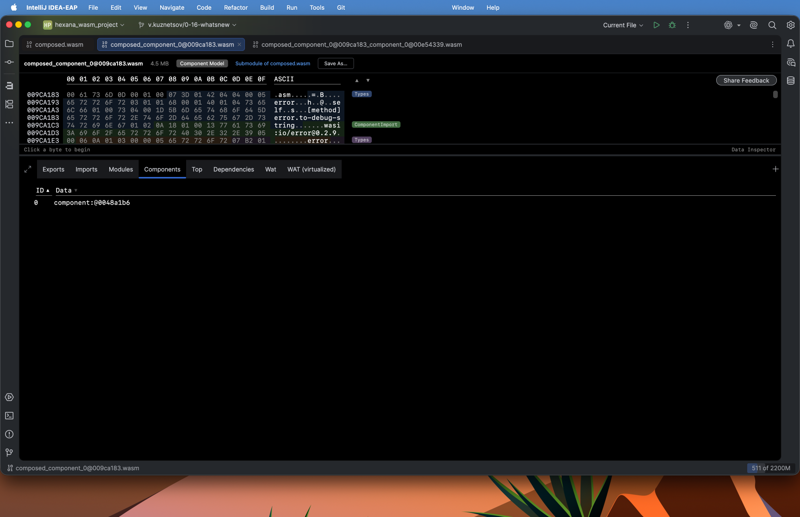

Hexana update
What's New in Hexana 0.16
Hexana 0.16 focuses on Component Model and Component Model while refining binary inspection inside JetBrains IDEs.
Component Model
Read glue-only components in WAT (virtualized)
Component-level imports, exports, types, aliases, and instances now render as foldable WAT sections with byte-accurate links back to Hex.
- The WAT (virtualized) tab of a Component Model binary no longer goes empty when the component embeds no core modules. Glue-only components (types, imports, exports, instances, aliases) now render their component-level constructs in the same virtualized panel core modules get.

Component Model
Open nested components as editor views
Open embedded components and modules recursively from the Components and Modules tabs, with every nested view retaining its location in the original binary.
- Nested components of a Component Model binary now open in their own editor view. A Components tab lists the embedded component the way Modules lists embedded core modules, and clicking the row opens it.
